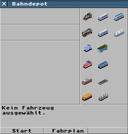
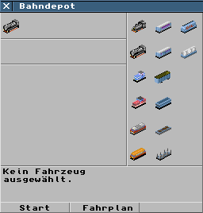
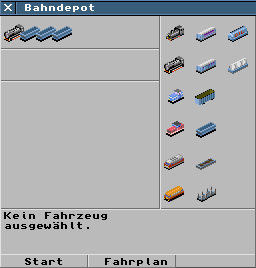

zur Simutrans-Anleitung
Simutrans Anleitung - Wie benutzt man ein Bahndepot
Die folgenden Abbildungen zeigen, wie ein Zug in einem
Bahndepot zusammengestellt wird. Zuerst jedoch muß man das
Bahndepotfenster öffnen, indem man das Bahndepot mit dem
Abfragewerkzeug anklickt. Das Bahndepotfenster ist in vier
Bereiche aufgeteilt: eine Spalte ganz rechts, in der man neue
Lokomotiven und Waggons einkaufen kann, eine Zeile für den
aktuellen Zug, eine Zeile für die im Depot bereitstehenden
Lokomitiven und einen Bereich für die im Depot gelagerten
Waggons.
- Informationen über die Lokomotiven und Waggons
erhält man, wenn man den Mauscursor über die
kleinen Icons in der rechten Spalte bewegt.
|
 |
- Man kauft nun eine Lokomotive indem man rechts
eines der Icons anklickt. Die Lokomotive wird
automatisch dem aktuellen Zug vorangestellt und
erscheint oben links im Fenster.
Die zweite
Zeile in der linken Spalte enthält die
Lokomotiven, die in diesem Depot vorhanden sind.
Eine neu gekaufte Lokomotive wird jedoch
automatisch in die oberste Reihe übernommen, da
normalerweise die nächste Aktion der Bau eines
Zuges ist. Würde man jetzt weitere Lokomotiven
kaufen, so würden diese in der zweiten Reihe
aufgereit werden, da schon eine Lokomotive für
den neuen Zug in der obersten Reihe vorhanden ist.
Ein Depot hat genügend Platz für zehn
Lokomotiven und bis zu 40 Waggons.
|
 |
- Nun kann man einige Waggons, ebenfalls durch
einfaches Anklicken der Icons, hinzugefügt
werden. Zunächst werden neue Waggons dem
aktuellen Zug angehängt. Wenn man mit anderen
Lokomotiven und Waggons einen Zug zusammenstellen
will, klickt man auf die Spalte links oben.
Dadurch werden alle Lokomotiven im Depot in die
mittlere Spalte und alle Waggons in die untere
Spalte gestellt. Nun kann man durch einfaches
anklicken dieser neue Züge zusammenstellen.
Jetzt benötigt der neue Zug nur noch einen
Fahrplan -> siehe Wie erstellt man
einen Fahrplan. Durch einen Klick auf "Start"
fährt der aktuelle Zug los.
|
 |
zur Simutrans-Anleitung
Von Hansjörg Malthaner
EMail: hansjoerg.malthaner@gmx.net
Änderungen von Henrik Wolff
eMail@Henrik-Wolff.de